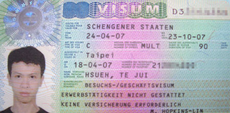
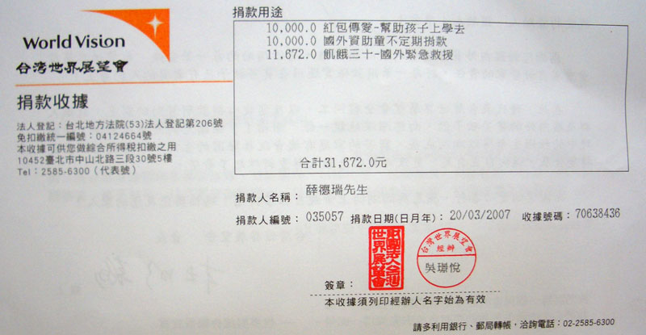

Fei-Fei從中東寄給我的united-mobile國際SIM卡今天開通了，他還幫我在裡面先儲值了85美金。
這張SIM卡跟國內通信業者最大的不同在於，我在國外接電話的時候，不需要付國際漫遊的費用。
而打電話給我的人也很便宜，一分鐘約20台幣，我自己撥打更便宜，一分鐘大約十二台幣。
今天從新莊騎到淡水新埔技術學院(真是個令人懷念的名字)，測試wintec贊助的GPS紀錄器WBT-201，使用的結果良好。
基本上就是個方便的軌跡紀錄器，只要開機就好了，其他都不用管他。
我設定成每15秒、或是每50公尺紀錄一個點，它就會默默的記錄下我騎過的路線。
回到家再透過随附的軟體抓出來，然後轉成Google Earth的KMZ格式。
就可以透過Google Earth看到今天騎的路線啦~
軌跡跟地圖有些不符合的地方，比如說我騎在水上面~_~ 那其實是因為Google的圖資太舊。
還沒有把已經蓋好的自行車道更新到地圖上，所以我就變成沿著河岸騎單車了。
你也可以自己安裝Google Earth，然後下載我的路徑檔案『點我下載0419的新莊到淡水KML單車路線檔案』，就可以觀看了。
這樣這次BTP旅行的軌跡會被很仔細的紀錄起來，等我老的時候，還可以細數自己去過哪裡(茶)
最後一個簽證，也是旅途中最後才會用到的一個：歐盟申根簽證，今天自己跑去德國在台協會申請。
那邊的服務之親切，已經好到讓人不覺得這邊是辦簽證的地方，而是旅遊服務諮詢處了。
有一個很好心的先生，在三月底我去的時候他就幫過我一次，這天再去還記得我。
託他和簽證官的福，早上十一點半送件，當天下午兩點半就拿到簽證了 :D
(一般都是要等到隔天，歐盟簽證可沒有沒有急件這種東西唷)

今天是4月18日，簽證官好心的把我的簽證日期往後延七天，而總停留天數也幫我加到滿，整整給我90天。
這樣我末段騎到法國之後，才不會因為簽證會要過期而顯的倉促。
因為歐洲地區防範恐怖攻擊的關係，機場的安檢都變成人臉還有指紋識別的機器，所以造成簽證的費用大漲。
現在都是60歐元，換成台幣就是2670元，和我當初辦法國的申根簽證相比，已經貴了一倍了 /_\
在等簽證的時間，我跑去附近的藥局買了一些東西，像是外傷消毒的藥水，ok繃，眼藥水，口罩，肌樂，還有維他命。
藥師很好心的給了我一些塑膠小罐子，要讓我裝藥用的。
我找了好久就是想找這樣的小罐子呀，本來想說用底片盒好了，但是這年頭去哪裡找底片盒 ~_~
這個盒子我除了拿來裝藥之外，主要目的還是拿來裝土 :D
到時候可以沿路裝一些土回來，給出發前幫我很多的朋友們當作旅行的紀念禮物。
回家前， 跑了一趟大輿出版社，這是一間很有趣的公司，只出版地圖，但是居然開了30年還屹立不搖。
跑了好幾間書店都沒有賣比較大本的中國地圖，都只有賣那種小本一大張的那種。
既然這樣那不如直接殺到出版社去比較快，就在那邊買了一本中國地圖全集。
地圖跟文字資料(景點、地形、氣候、交通)大概是二比一的分量，總頁數160頁，
除了以省為單位的地圖，大都市(如北京)也有自己的詳細地圖。
雖然直接殺去出版社買有打九折，但是買回家才發現，Yahoo購物買的話打85折。 T_T
回家後終於收到台灣世界展望會的捐款收據。都過了將近一個月了 ~_~

遲來總比沒來好，這筆款項是贊助超過十萬元的三萬一千六百七十二元，我代替各位好心的人士捐出去給比我更需要的人。
而我收到的十萬元，每一塊錢我都會花的有價值。謝謝你們大家！
機車的哈薩克簽證，從馬來西亞寄回來了，花了一萬台幣換一個簽證，昂貴的代價，就是為了確保行程順暢。
傻呼呼的台胞證也入手了，這次我第一次去中國，很讓人期待呀 *^^* 祖國的江山跟人文～等我吧
單車也已經改裝完畢，旅行的背包也入手了，光是看到就很有旅行的悸動。
GPS軌跡記錄器，本來打算用買的，結果最後一刻得知wintec願意贊助一台還沒有上市的WBT-201。
不僅超級省電，可連續使用『至少』十個小時，而且還可以記錄十三萬點的軌跡。
簡單換算一下，要是我每一分鐘記錄一點位置，每天騎乘八個小時，那一共有480點。
那十三萬點的容量，可以整整記錄270天呀！（我這次也才計畫騎180天而已~_~）
大家想到GPS，都第一個會連想到導航的功能，但其實我不需要導航，我需要的是記錄騎乘過的路線，
這樣將來整理的時候比較有實際的感覺，也能讓後人參考路線怎麼走。
目前路線規劃有兩條，以俄羅斯的莫斯科為分界點，依情況決定是往西朝烏克蘭還是往北進入北歐。
這已經是四個月之後的事了，到時候看怎麼樣再來研究。
烏克蘭的簽證果真如預期的一樣很麻煩，既貴又費時，相當傷腦筋@@"
要是有辦烏克蘭簽證的高手願意協助，請不吝給予指教，謝謝。
另一項3C產品-數位像機，決定用買的，比較單純化。
早上去完德國在台協會(簽證果然沒問題，只是他們主管的想法也是跟我一樣，四月份再辦即可)
回家的路上就順路跑去漢口街買像機，漢口街真的是像機街，這樣買東西比較比較快，可以比價很多間。
一間店進去就直接問『有沒有Panasonic LX2？』就這麼問了一條街，結果大缺貨，只有一家有賣。
這是一款很神奇的像機，它的鏡頭是徠卡的，但是徠卡不會做數位像機，所以就委託Panasonic製造。
而製造出來的像機，貼上Panasonic的牌子，就變成LX2，售價大約是台幣一萬六左右。
同樣一台像機，若是貼上徠卡的可樂商標，
那就變成D-LUX3，這兩台一模一樣的像機，換了標籤後售價就變成兩萬六左右。
一個商標值不值一萬元，已經是一個吵到翻的問題，我很窮，所以買LX2就很開心了 *^^*
之所以會買LX2，其一是因為它很省電，其二是它用徠卡鏡頭，其三是可以拍16:9的廣角照片。
這次出去想拍點不一樣的照片回來作紀念，原本的Casio Z55還是會帶著走，
萬一LX2受不了沿途的摧殘壞掉了，那至少還有備用像機可以拍，因為記憶卡規格都是SD，所以很OK啦～
今天下午，這次遠征的主角，單車就要登場了(播放緊張的音樂)。
2007年世貿自行車展結束之後，Louis Garneau 這個加拿大的品牌，2007年新款的旅行單車 LGS-GMT就送到了新莊的RST休閒館 。
我當兵的同袍阿宏也在這邊吃頭路，單車環法回來之後RST也幫我辦過一場座談會，所以跟店長Dino還算熟識。
Louis Garneau這次將贊助BTP旅行的單車、背包、安全帽和零件補給，RST則負責單車改裝還有我的行前訓練。
我騎的是白色款，猛一看和現在騎的FCR1還挺神似的，稍微撫平了不能騎FCR出去的遺憾。
單車需要改裝的地方主要是把手的部分，要從彎把改成直把，比較適合我騎乘的習慣，還有整台車的微調和補強，想必也是各大工程。
另外，Dino也幫我和720 Armour聯繫，贊助了這次的太陽眼鏡，一共給了我兩付。
一付是平常休閒的時候可以戴，另外一付可以配上鏡片，在平長騎車的時候戴，兩付都是UV400的高防曬係數，
這樣長時間在太陽底下騎車，眼睛才不會壞掉 @"@
離開RST之後 ，我就跑去小林眼鏡配了鏡片，葉小姐很好心的幫我超仔細測量度數和散光。
雖然我只是配一付最便宜的鏡片而已，連框都沒有的說...
而且還算我優惠，本來一片700元，一付1400元的鏡片，免費提供給我，多謝妳。
這一路協助我的人，我有在默默的感激，希望你老闆看到可以給妳加薪。
早上撘公車去中和的微星(MSI)總部去，見NB行銷部的Jeff和Anita。
主要目的是要拿MSI的S300筆記型電腦，換證進入廠區，沒多久Jeff就抱著嶄新的S300出現了。
鋁合金的外殼，比較輕而且堅固，我的iBook是塑膠外殼，很給它重 ~_~
稍微試玩了一下，這是我用Mac這麼多年以來，重新回到windows的OS。
中午就被Jeff招待吃一間很好吃的客家菜，在台北市古亭這樣的都市區，居然也有鬧中取靜的風味小店。
大快朵頤一番之後，我就頂著圓滾滾的肚子，拎著客家擂茶，捧著微星的電腦，撘公車回家要開始研究了。
花了一整個下午，一邊熟悉windows的操作，一邊安裝所需的軟體，時間就這麼無情的過去了。
裝防毒軟體是一定要的，畢竟現在用的可不是Mac，還有網頁編輯、圖片編輯、Google系列...。
除了手感還需要熟悉之外，這台S300已經準備好可以上路工作了。
另外微星還給了我一套備用的外接硬碟拿來備份資料，也幫我聯繫俄羅斯的員工，等我騎到那可以有個落腳處休息。
不只是贊助一台電腦這麼簡單而已，Jeff是一位真正的朋友。
iBook你就留在台灣給米莎莎用，發揮你的所長吧～